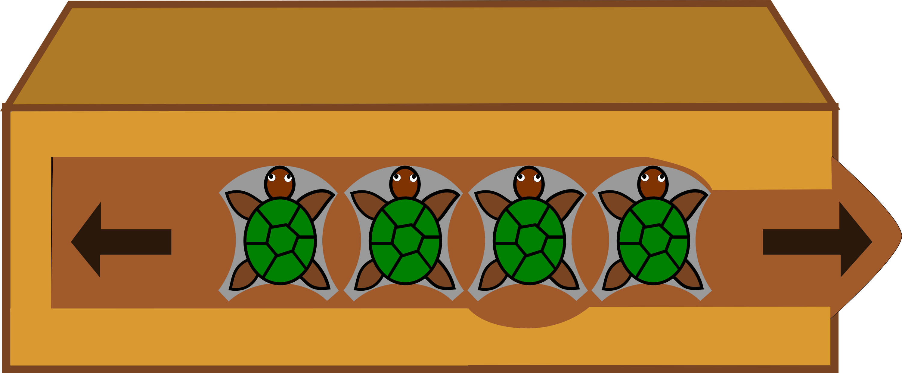

Open the box by unlocking: turn the turtles in order to drag them all together to the right.
Click on the turtle to turn them. A turtle can only be turned up or left. A turtle can not turn if it is not in front of the notch. Click the arrows to pull or push the tab.
Note :